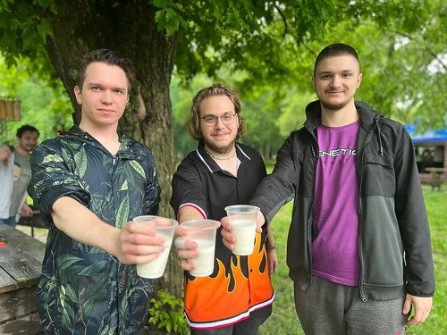
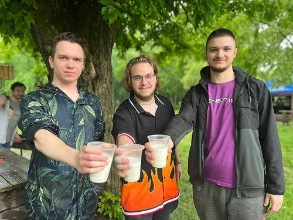

Чекаємо вас 25 грудня 2024 року о 10:00 біля озера "Котлован". Наша мета — очистити озеро, покращити екологію та створити приємний простір для всіх мешканців. Долучайтесь і разом зробимо добру справу!
"Зміни починаються з кожного з нас!"
Деталі заходу
Дата: 25 грудня 2024 року
Час: Початок о 10:00
Місце: Прибережна зона біля озера "Котлован"
Мета заходу - очистити прибережну територію та покращити екосистему озера, привернути увагу до проблеми забруднення.
Розклад заходу
- 10:00 - Реєстрація учасників
- 10:30 - Початок прибирання та роботи
- 14:00 - Спільний відпочинок і підбиття підсумків
- 15:00 - Завершення заходу
Ярмарок для підтримки акції
У рамках заходу ми організуємо благодійний ярмарок для збору коштів. Запрошуємо місцевих майстрів, які можуть віддати частину прибутку на підтримку акції. На ярмарку ви знайдете товари, виготовлені активістами: смачну їжу, сувеніри, прикраси, іграшки та багато іншого.
Приходьте та підтримайте нашу ініціативу, зробивши свій внесок у збереження довкілля!
Спільний пікнік після прибирання
Після завершення основної частини заходу ми запрошуємо всіх учасників на невеликий пікнік, щоб відпочити, обговорити підсумки та поділитися враженнями. Для комфортного відпочинку ви можете взяти з собою:
- Термоси з гарячими напоями (чай, кава тощо);
- Коврики або пледи для сидіння;
- Легкі закуски для себе чи друзів;
- Настільні ігри чи книги для спільного дозвілля.
 

Контакти організаторів
- Андреєва Дана: +380 50 123 4567
- Іванов Андрій: +380 50 123 4568
- Бахарєва Діана: +380 50 123 4569
- Безпалько Вікторія: +380 50 123 4570
- Ілларіонов Олександр: +380 50 123 4571
- Email: 10aclass@gmail.com